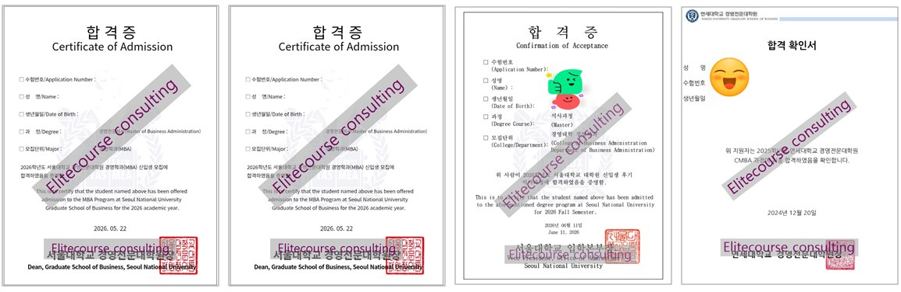
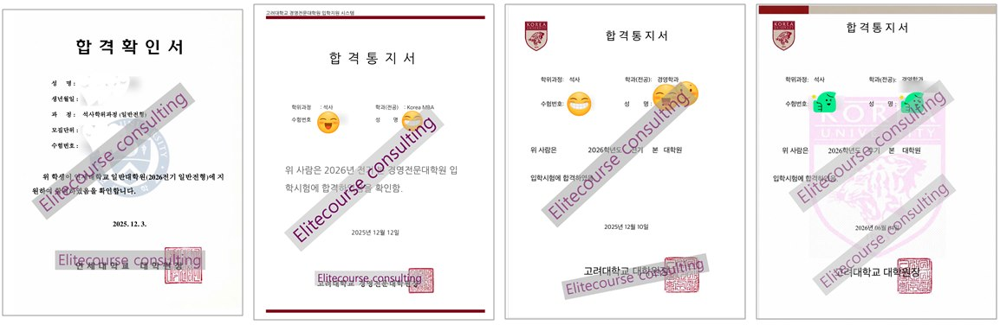
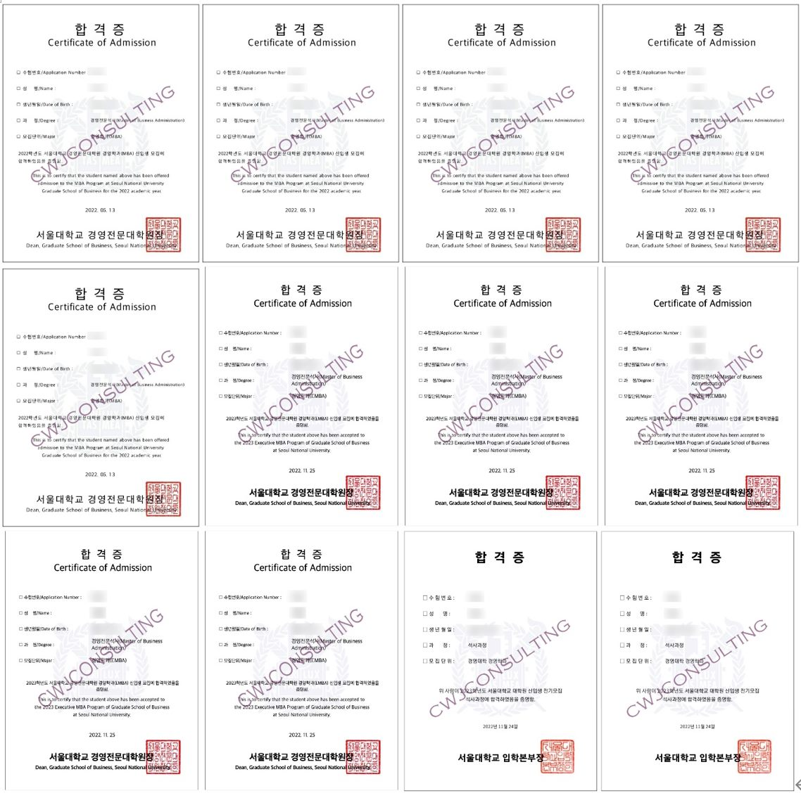
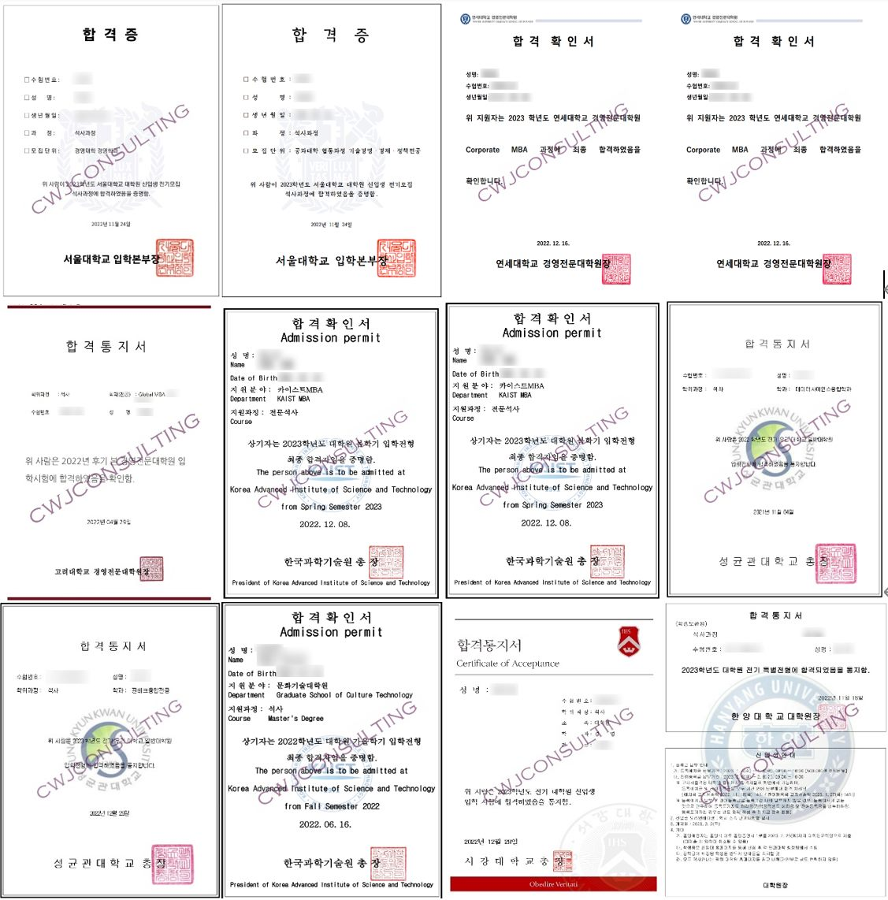
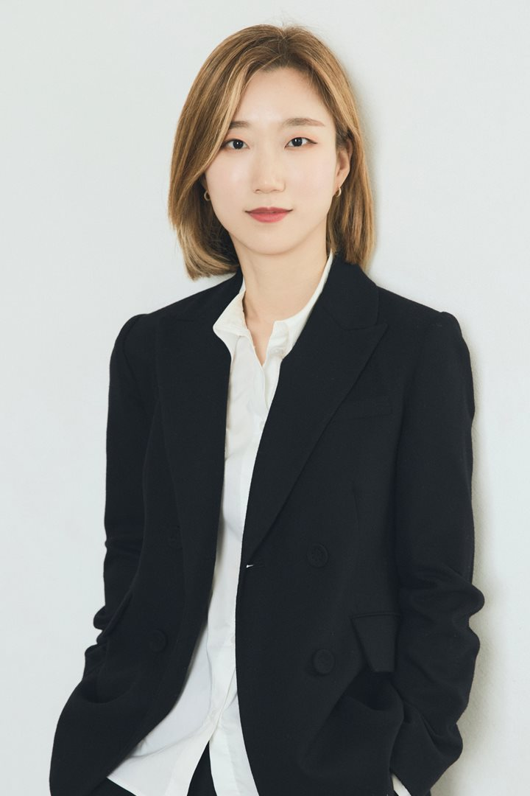
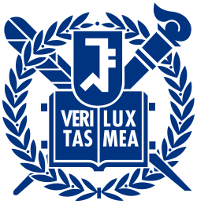
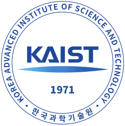
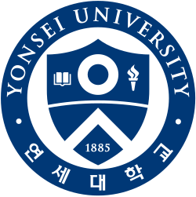

MBA 컨설팅
- MBA 지원 전략 제안, 스펙 진단
- 자기소개서 · 경력기술서 가이드
- 구술시험 · 면접 준비
최상위권 MBA · 대학원 · 편입 입시 컨설팅




실제 컨설팅 합격자분들의 합격증 중 "일부"입니다.

연세대학교 졸업 후 교육 분야 경력이 어느덧 17년이 넘었습니다. 그동안 10대부터 50대까지 1,000명 이상의 학생분들을 거치고, 10,000시간 이상의 강의, 코칭, 컨설팅을 하면서 지원자들이 각자에게 적합한 적성과 환경을 찾아가는 과정을 지켜볼 수 있었습니다. MBA 진학을 돕는 동안에는 도전적인 대표님들과 창업가분들이 성장하는 모습을 곁에서 볼 수 있었습니다.
입시는 나이를 불문하고 누구에게나 쉽지 않은 과정입니다. 저는 그 과정을 함께하면서 올바른 진로를 찾고, 원하는 학교를 전략적으로 준비해드리는 일이 정말 즐겁고 보람됩니다. 그래서 컨설팅이 있는 시간에는 늘 기대감을 가지고 임하며, 교육을 천직으로 여기고 있습니다.
앞으로도 지원을 준비하시는 분들이 “자신의 마음이 향하는 길”을 잘 찾아가실 수 있도록 쌓아 온 노하우와 합격 데이터를 바탕으로 최선의 합격 전략을 제시해드리겠습니다.
연세대학교 졸업한국코치협회 전문코치에니어그램 마인드 컨설턴트교육 경력 17년
3가지 전문성이 최적으로 조합되어 지원자의 가능성을 극대로 끌어내기 때문입니다
| 연도 | 결과 | 참고 |
|---|---|---|
| 2026 | 서울대 Full-time MBA 역대 최다 합격2026학년도 후기 | |
| 2025 | 서울대 Full-time MBA · 일반대학원 합격최상위권 MBA 및 일반대학원 전체 합격자 배출 | 2번째 · 3번째 도전 지원자 최종 합격최상위권 대학원 재도전, 엘리트코스를 통해 합격 |
| 2024 | 서울대 Full-time MBA 전원 합격 (100%)진학 상담부터 면접까지 맡은 후기 지원자 기준 | 최상위권 MBA · 대학원 서류 합격률 100%서울대 경쟁률 약 4:1, 역대 가장 높았던 해 |
| 2023 | 최상위권 MBA · 대학원 전체 합격률 90%최상위권 MBA 1차 서류 합격률 100% | 연세대 · 고려대 Part-time MBA경쟁률 최고 7:1 |
| 2022 | 서울대 MBA · 경영대학원 전원 합격최상위권 MBA · 대학원 전체 합격률 92% | 총 합격자 41명 |
합격하신 분들의 이야기
컨설팅을 받으신 분들이 직접 남긴 후기 중 일부입니다.

가장 큰 장점은 컨설팅을 진행하면서 나에 대한 자신감을 얻을 수 있었다는 점입니다. 너무 오래되었거나 미처 내 강점이라고 생각하지 못했던 부분들을 객관적인 입장에서 이야기해 주시면서, 그게 왜 강점인지 부각해 주셨습니다. 내 강점을 제대로 어필하지 못하시는 분들께 꼭 추천드립니다.

대화를 통해 마음을 열고 깊은 이야기까지 끌어내, 진정성 있는 스토리텔링이 담긴 결과물이 나온다는 점이 인상적이었습니다. 특히 자신감을 많이 북돋아 주셔서 내면으로부터 자신감을 장착한 채 면접에 임할 수 있었던 점이 가장 큰 성공 요인이었던 것 같습니다. 셀프 어필에 서툰 분께 꼭 추천드리고 싶습니다.
자소서를 써 본 경험이 없어 걱정이 컸지만, 제 기억을 이끌어 내 경험의 의미를 찾고 그것을 대학원 공부와 연결할 수 있었습니다. 불안하고 자신감이 없던 저를 격려해 주셨고, 제 생각과 잠재력을 표현할 수 있도록 자신감을 불어넣어 주셨습니다.
실제 면접 상황을 최대한 완벽하게 재연해 주셔서 실전의 압박과 긴장감을 미리 체험하고 갈 수 있었습니다. 마무리 즈음 전해 주신 조언과 격려가 긴장을 바로 가라앉히고, 면접 자신감을 장착하는 데 실질적인 도움이 됐습니다.

학부가 좋지 않아 처음에 정말 막막했습니다. 쌤이 제 스토리를 잘 이끌어 내 주셨고, 부족한 점은 보완을 요청해 주셔서 그 부분에 더 집중했습니다. 진정성을 가지고 이끌어 주시는 모습을 보고 '원지쌤이 시키는 대로만 하면 나도 합격할 수 있겠다'는 마음으로 임했습니다.
제가 지원했던 서울대는 영어 지문을 보고 질문에 답하는 형식이라고만 알고 있었는데, 자세한 상담으로 정확한 면접 방법을 알고 가서 당황하지 않고 면접을 볼 수 있었습니다. 여러 상황을 상정해 대처 방법도 꼼꼼하게 체크해 주셨습니다.
경력이 많아 입사 평가자로서 지원자들을 본 경험이 많은데, 컨설팅을 받아 보고 역시 보는 눈이 다르시다고 느꼈습니다. 굉장히 예리하셔서 놀랐고, 은연중에 걱정하던 부분까지 꼼꼼하게 준비할 수 있었습니다.
MBA를 처음 준비하는 경우라 어디서부터 어떻게 해야 할지 모든 것이 막연했습니다. 그래서 그 길을 알고 계신 분과 동행했습니다. 노력은 올바른 방향으로 하는 것이 중요하다고 생각합니다.
모든 과정은 합격자 데이터를 바탕으로 1:1로 진행합니다.
모든 과정의 기반
성향별 자기 이해로 자신감을 폭발시키는 마인드 코칭
한국코치협회 전문코치이자 에니어그램 기반 마인드 컨설턴트로서, 성향마다 다른 강점을 찾아내고 글 첨삭을 넘어 내적 성장을 이끄는 컨설팅을 합니다.
토요일·공휴일, 저녁 8시 이후, 미팅 중에는 답변이 늦을 수 있습니다. 확인 후 회신드립니다.
문의하실 때 함께 보내 주세요